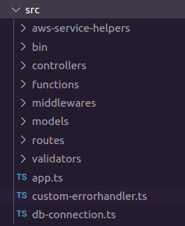

Ticorporate portfolio
Kalle Kaitamäki
Lähtökohdat
Roolit
Päärooliini projektissa oli backend-kehittäjä.
Sivuroolini oli testaaja.
Myös muihin rooleihin liittyviä tehtäviä tuli projektin aikana tehtyä.
Tavoitteet
Projektin alussa jokainen määritteli oppimistavoitteet itselleen. Halusin kehittää backend-ohjelmointi taitojani ja opetella käyttämään siihen tarvittavia frameworkeja paremmin. Halusin myös oppia lisää tietoturvasta ja siitä miten backend-sovellus voidaan hostata eri ympäristöissä.
Tavoitteeni oli myös oppia suunnittelemaan parempia relaatiotietokantoja ja kirjoittamaan niihin monimutkaisempia kyselyitä.
Frontend puolelta tavoitteenani oli kehittyä frontendin ja backendin yhdistämisessä toisiinsa.
Viimeisenä halusin kehittää ryhmätyöskentelytaitojani ja oppia scrum-prosessin osana olemisesta.
Aiempi osaaminen
Backend-ohjelmoinnista minulla oli jonkin verran kokemusta käymieni kurssien osalta mutta laajempaa projektia/fullstack sovellusta en ollut tehnyt vielä missään.
Tietoturvan osalta käymilläni kurseilla oli mainittu joitain asioita mutta tässäkin laajemman projektin kokemus puuttui.
Tietokantojen osalta osaamistasoni oli suhteellisen hyvä jo lähtöönsä mutta näin isoa relaatiokantaa en ollut vielä suunnittellut.
Frontend frameworkiksi projektiimme valittiin angular, joka oli minulle lähes täysin uusi framework, mutta yleistä osaamista löytyi esimerkiksi svelte frameworkista.
Ryhmätyötaitoni olivat hyvät jo lähtöönsä aikasempien kurssien ja työelämässä opittujen taitojen takia, mutta tästäkin puuttui kokemus pitkästä laajemmasta projektista.
Suunnittelu
Projektin alkuvaiheessa pidimme kahden viikon mittaisen design sprintin.
Suunnittelmien tekeminen jatkui kuitenkin myös tämän jälkeen.
Tietokannaksi valittiin sql-tietokanta.
Tallennettavien käsitteiden välillä tulisi olemaan paljon suhteita, joten relaatiokanta sopi nosql-kantaa paremmin sovelluksemme tietokannaksi.
Tietokannasta tehtiin ensin design sprintin/1. sprintin aikana erd-malli.

Backendiksi valittiin perinteinen rest-arkkitehtuuria hyödyntävä api, jolla tietokantaa sekä AWS:n palveluita hallitaan.
Backendin perusrunkona toimii express.js kirjasto.
Normaalista poiketen valitsin typescriptin backendin rakentamiseen tavallisen javascriptin sijaan, koska halusin oppia lisää tyypitetystä kielestä. Typescript myös vähentää yleisesti kehitysaikaisten virheiden määrää.
Laajemman sovelluksen suuunnittelu tuntui aluksi haastavalta, mutta lopuksi sain kuitenkin aikaiseksi järkevän rakenteen.
AWS
Lopullinen arkkitehtuuri muovautui vielä projektin aikana. Mallia yksinkertaistettiin huomattavasti ja esimerkiksi backendin ajamiseen valittiin ec2:n sijasta elastic beanstalk sen helppokäyttöisyyden takia. Alla kuva arkkitehtuurista.

Tietokannan luonti
Sovelluksen tietokanta pyörii AWS:n rds-palvelussa. Tietokannan luominen AWS:n päässä oli verrattain helppoa.
Sovelluksemme tietokannaksi valittiin MariaDB. MariaDB valittiin MySQL:n sijasta koska sen suorituskyky on parempi ja koska MariaDB ei vaadi maksettua lisenssiä kaikkien ominaisuuksien käyttöön.
Erd-mallin valmistuttua tehtiin sen perusteella er-malli mysqlworkbench työkalun avulla.

Kuten voidaan huomata, er-malliin tehtiin lopulta pieniä muutoksia kehitystyön edetessä poiketen erd-mallista.
Mallista generoitiin luontilause, joka ajettiin rds-palvelussa pyörivään MariaDB tietokantaan.
Kehitystyön aikana opin paljon uutta sql:stä ja tietokannan suunnittelusta. Huomasin myös miten tärkeää eri roolien kommunikointi keskenään on tietokannan suunnittelun kannalta. Tietokantaa jouduttiinkin muuttamaan monesti esimerkiksi UI-suunnitelmien muuttuessa.
Ja nyt sitä koodia!
Backendin arkkitehtuuri koostuu pääasiassa kontrollolereista ja routereista. Alla esimerkkinä kontrolleri ja router, josta löytyy toiminnot koulujen hakemiseen.
const schoolC = {
// Function for finding school by name
async findByName(
_request: express.Request,
response: express.Response,
next: express.NextFunction,
) {
try {
const data = await queryDb('SELECT * FROM School WHERE name = ?;', [
_request.params.name,
]);
console.log(data);
response.status(200).json(data);
} catch (error: unknown) {
next(error);
}
},
// Function for finding all schools
async findAll(
_request: express.Request,
response: express.Response,
next: express.NextFunction,
) {
try {
const data = await queryDb('SELECT * FROM School;', []);
console.log(data);
response.status(200).json(data);
} catch (error: unknown) {
next(error);
}
},
};
const schoolRouter = express.Router();
// Route to get school by name
// /schools/:name
schoolRouter.get('/:name', schoolC.findByName);
// Route to get all schools
// /schools/
schoolRouter.get('/', schoolC.findAll);
Alla piilossa monimutkaisempi työilmoitusten hallintaan tehty kontrolleri. Valitsin tämän näytteeksi siksi, koska se on toteutettu pääosin hyvin mutta kehitättävääkin löytyisi vielä. Kontrollerista löytyy kaikki tarvittavat crud-toiminnot ja koodi on pääosin selkeää. Parannettavaa olisi työilmoituksen tallentavassa funktiossa. Funktiossa pitäisi ensinnäkin tarkistaa löytyykö syötettyä kaupunkia tietokannastamme koska muuten tietokanta kaatuu jos kaupunkia ei ole olemassa. Toiseksi päivämäärän käsittelyn olisi hyvin voinut tehdä funktioksi erilliseen tiedostoon, jotta koodi olisi ollut selkeämpää.
Koodi avautuu tästä
const joblistingC = {
// Return all job adverts from database
async findAll(
_request: express.Request,
response: express.Response,
next: express.NextFunction,
) {
try {
const data = await queryDb('SELECT * FROM JobAdvert;', []);
console.log(data);
response.status(200).json(data);
} catch (error: unknown) {
next(error);
}
},
// Function to find job advert by id
async findById(
_request: express.Request,
response: express.Response,
next: express.NextFunction,
) {
try {
const data = await queryDb(
'SELECT * FROM JobAdvert WHERE advertid = ?;',
[_request.params.advertid],
);
console.log(data);
response.status(200).json(data);
} catch (error: unknown) {
next(error);
}
},
// Function to insert new advert into database
async createAdvert(
_request: express.Request,
response: express.Response,
next: express.NextFunction,
) {
try {
// Create unique id for advert
const advertid: string = uniqid();
// Create new date object
const date = new Date();
// Set date 6 months forward
date.setMonth(date.getMonth() + 6);
// Check that date is in correct format (YYYY-MM-DD)
if (!_request.body.validuntil.match(/^\d{4}-\d{2}-\d{2}$/)) {
throw new Error('Date is not in valid format. Should be YYYY-MM-DD.');
}
const userDate = new Date(_request.body.validuntil);
// Check that adverts expiration date is less than half year from now
const validuntil =
userDate > date
? `${date.getFullYear()}-${
// If month is below 10 it is needed to place 0 before month number so it is in valid format
// Also getMonth start counting months from 0 (january) so it is needed to + 1 to get correct date
date.getMonth() + 1 > 9
? date.getMonth() + 1
: '0' + (date.getMonth() + 1)
}-${
// If day is below 10 it is needed 0 before day number so it is in valid format
date.getDate() > 9 ? date.getDate() : '0' + date.getDate()
}`
: _request.body.validuntil;
// Contruct advert object containing all necessary data
const advertObj = {
advertid,
..._request.body,
accepted: false,
isvalid: true,
validuntil,
};
// Validate jobadvert
const valid = jobadvertValidation(advertObj);
// If advert is not valid throw error
if (valid.valid && valid.jobadvert) {
const insert = queryDb(
'INSERT INTO JobAdvert VALUES (?, ?, ?, ?, ?, ?, ?, ?, ?, ?, ?, ?, ?, ?);',
Object.values(valid.jobadvert),
);
// Email text
const htmlText = `<head>
</head>
<body>
<h2>Ilmoituksen tunniste: ${advertid}<h2>
<h2>${_request.body.jobtitle}</h2>
<p>Etunimi: ${_request.body.firstname}</p>
<p>Sukunimi: ${_request.body.familyname}</p>
<p>Yritys: ${
_request.body.company === null ? '' : _request.body.company
}</p>
<p> Alkamispäivä: ${
_request.body.startdate === null ? '' : _request.body.startdate
}</p>
<p>Sähköposti: ${_request.body.email}</p>
<p>Puhelinnumero: ${_request.body.phonenumber}</p>
<p>Kuvaus: ${_request.body.description}</p>
<p>Palkka: ${_request.body.salary}</p>
<p>Paikkakunta: ${_request.body.city}</p>
<p>Ilmoitus voimassa: ${validuntil}</p>
<h3>Poista ilmoitus painamalla alla olevaa linkkiä</h3>
<a href="http://localhost:4200/jobadvert/delete/${advertid}">Poista ilmoitus</a>
</body>`;
// Send email to job adverts creator with link to update advert
// Currently sends email only to digimajakka email because aws SES access rights are limited
await ses.sendEmail(
'digimajakka.asiakaspalvelu@gmail.com',
'Kiitos luomastasi ilmoituksesta',
htmlText,
);
console.log(insert);
response.status(201).json({
message: 'Created advert successfully',
success: true,
advert: {
advertid,
..._request.body,
validuntil,
},
});
} else {
// Create error object containing information which data received was incorrect
const errorMsg = {
message:
'Some received fields not valid, shows false at invalid fields',
phonenumber: valid.phonenumberValid,
email: valid.emailValid,
fieldtypes: valid.typeCheck,
startdate: valid.startdateValid,
expirationDate: valid.expirationDateValid,
};
throw new CustomError(JSON.stringify(errorMsg), 400);
}
} catch (error: unknown) {
next(error);
}
},
// Function to delete advert from database
async deleteAdvert(
_request: express.Request,
response: express.Response,
next: express.NextFunction,
) {
try {
const result = await queryDb(
'DELETE FROM JobAdvert WHERE advertid = ?;',
[_request.params.advertid],
);
// Email text
const htmltext =
'<h3>Ilmoituksesi on poistettu palvelusta digimajakka</h3>';
// Send email to given email adress
await ses.sendEmail(
'digimajakka.asiakaspalvelu@gmail.com',
'Ilmoituksen poisto',
htmltext,
);
console.log(result);
response.status(200).json({
success: true,
message: 'Deleted job advert successfully',
});
} catch (error: unknown) {
next(error);
}
},
// Function to update job advert
async updateAdvert(
_request: express.Request,
response: express.Response,
next: express.NextFunction,
) {
try {
const {sql, sqlparams} = convertBodyToQueryFormat(
_request,
'JobAdvert',
'advertid',
);
const result = queryDb(sql, [...sqlparams, _request.params.advertid]);
console.log(result);
response.status(200).json({
success: true,
message: 'Updated advert successfully',
});
} catch (error: unknown) {
next(error);
}
},
};
Sql
Sql-kielestä opin myös uusia asioita. Yksi näistä oli tietokannan eventit eli tapahtumat, joita ajetaan esimerkiksi kellonajan perusteella. Eventeistä minulla ei ollut aiempaa kokemusta. Eventit olivat tarpeellisia projektissa, koska vanhentuneet toimeksiantoilmoitukset pitää piilottaa näkyvistä automaattisesti. Tätä varten loin eventin, joka ajetaan päivittäin heti keskiyön jälkeen.

Asia mistä opin paljon lisää olivat proceduurit. Proceduurit olivat järkevä tapa toteuttaa tiettyjä toimenpiteitä kuten profiilin poistaminen, koska proceduuriin oli helppo lisätä transaktio. Proceduurin tekeminen selkeytti ja lyhensi myös backendin koodia.

Proceduurin käyttö backend koodissa profiili kontrollerissa.
// Deletes profile by id
async deleteProfile(
_request: express.Request,
response: express.Response,
next: express.NextFunction,
) {
try {
// Calls database procedure which deletes all profile data with given profile id.
// Procedure wrappes delete queries in transaction and rollbacks if anything fails.
const result = await queryDb('CALL deleteProfile(?);', [
_request.params.profileid,
]);
console.log(result);
response.status(200).json({
message: 'Deleted profile succesfully',
success: true,
});
} catch (error: unknown) {
next(error);
}
}
Ylläolevan koodin queryDB-funktio on oma tekemäni funktio, jolla saadaan yhteys tietokantaan ja lähetettyä haluttu kysely siihen. Tietokantaan muodostetaan connection pool, joka mahdollistaa samojen yhteyksien käytön uudestaan sen sijaan että ne suljettaisiin aina käytön jälkeen.
Koodi avautuu tästä
// Create mysql connection pool
const pool: mysql.Pool = mysql.createPool({
connectionLimit: 1,
host: process.env.HOST,
user: process.env.DB_USER,
password: process.env.DB_PASSWORD,
database: process.env.DB,
});
// Type for database query return object field
type ResultField = string | boolean | number;
// Type for database query return object
type DbResult = Record <string, ResultField>;
/**
* Function to create connection and send query to database
* @param {string} query sql query
* @param {Array} parameters array of values that replaces "?" in sql query
* @return {Promise} promise with data returned from database
*/
const queryDb = async (query: string, parameters: unknown[]) => {
return new Promise<[DbResult]>((resolve, reject) => {
// Get pool connection
pool.getConnection(async (error, connection) => {
// If error throw error forward
if (error) {
throw error;
} else {
console.log('Db connection successfull');
}
// Send query to database with parameters
connection.query(query, parameters, (error: unknown, result) => {
// If error reject promise
if (error) {
reject(error);
} else {
// Check that query doesn't return undefined
// In case of undefined release connection and reject promise
if (typeof result === 'undefined') {
connection.release();
reject(new TypeError('Query returned undefined value'));
}
// Release connection after successfull query
connection.release();
// In case of successfull query resolve promise wiht result
resolve(result);
}
});
});
});
};
export default queryDb;
Funktioita ja validointia
Projektin aikana oli myös tarpeellista tehdä funktioita sekä middlewareja, jotta koodia saatiin siistimmäksi ja modulaarisemmaksi.
Alla oleva funktio muuttaa minkä kokoisen objektin tahansa sql update lauseeksi ja sen parametreiksi mysql-kirjaston mukaisella tavalla.
Koodi avautuu tästä
const convertBodyToQueryFormat = (
request: express.Request,
tablename: string,
idcolumnname: string,
) => {
if (!request.body) {
throw new Error('No body received in request');
}
// Take values values from object to array
const values: unknown[] = Object.values(request.body);
// Take keys(columns) from object to array
const keys = Object.keys(request.body);
// Updatestring will contain update query
// It is contructed from values and keys separated from object
// This allows to use this route to update any number of columns in table row
// Start string of the query
let sql = 'UPDATE ' + tablename + ' SET ';
// Add each of keys(column names) one by one into updatestring
for (const x of keys) {
sql += String(x) + ' = ?';
// If added last key then insert just ' ' otherwise ',' is needed
sql += keys.indexOf(x) === keys.length - 1 ? ' ' : ', ';
}
// Last part of update string where you specify profile id
sql += 'WHERE ' + idcolumnname + ' = ?;';
return {
sql: sql,
sqlparams: values,
};
};
Alla oleva bodyChecker on middleware, joka tarkistaa ettei vastaanotetun pyynnön bodyssä ole undefined tai null arvoja.
Koodi avautuu tästä
const bodyChecker = (
_request: express.Request,
_response: express.Response,
next: express.NextFunction,
) => {
try {
const values = Object.values(_request.body);
if (
values.includes(undefined) ||
values.includes(null) ||
values.includes('undefined') ||
values.includes('null')
) {
throw new Error('Undefined or null values in body');
} else {
next();
}
} catch (error: unknown) {
next(error);
}
};
Datan validointi oli myös tärkeässä osassa sovelluksen toimivuuden ja tietoturvan kannalta. Kehityksen aikana tässä auttoivat typescriptin tyypit. Koska typescript käännetään javascriptiksi ennen kuin se voidaan suorittaa, täytyi myös TS:n tyyppien lisäksi tehdä validoinnit perinteisellä javascriptillä esimerkiksi tietokannan insert lauseiden yhteydessä.
Validoinnistakin opin paljon uutta ja varsinkin siitä, kuinka tärkeää se on laajemman mittakaavan sovelluksessa. Monet sattuneista virheistä johtuivatkin juuri validoinnin puutteesta.
'Validoinnissa minulla on myös vielä kehitettävää tarkkuudessa. Sovelluksemme kaatui loppuesityksessä ja osasyynä siihen oli se ettei paikkakunnan nimen olemassaoloa tietokannassa tarkistettu toimeksiantoilmoitusta lähetettäessä. Olemalla tarkempi ja kunnollisilla testeillä tämäkin virhe oltaisiin voitu välttää.
Validoinnissa käytettiin muunmuassa factory functioita jotka filtteröivät ei toivotut tiedot pois objectista. Alla esimerkki toimeksiantoilmoituksen factorystä.
Koodi avautuu tästä
// Factory function is used to make sure there are no unwanted fields in object which contains new advert.
// Factory function also places default values into object keys if no value is given.
const jobadvertFactor = ({
advertid = '',
firstname = '',
familyname = '',
company = null,
startdate = null,
email = 'esimerkki@sahkoposti.com',
phonenumber = '000-0000-0000',
jobtitle = '',
description = '',
salary = '',
validuntil = '0000-00-00',
isvalid = true,
accepted = false,
city = '',
}: Jobadvert): Jobadvert => ({
advertid,
firstname,
familyname,
company,
startdate,
email,
phonenumber,
jobtitle,
description,
salary,
validuntil,
isvalid,
accepted,
city,
});
Tyypit tarkistetaan myös javascriptillä virheiden välttämiseksi ja tietoturvan takia. Sitä varten luotiin yksinkertaisia funktioita tarkistusta varten.
Koodi avautuu tästä
export const userTypeChecker = (user: User) => {
if (
typeof user.email !== 'string' ||
typeof user.admin !== 'boolean' ||
typeof user.schoolname !== 'number'
) {
return false;
}
return true;
};
AWS palvelut koodiin
Kun Tietokanta oli luotu ja backendiin oli tehty perustoiminnallisuudet sen käsittelyyn, alettiin rakentamaan AWS:n palveluita.
En ennen tätä projektia ollut juurikaan pystyttänyt saati käyttänyt AWS:n palveluita joten tässäkin kohtaa aikaa meni paljon opetteluun, tutoriaaleihin ja kokeiluun.
AWS:n palveluita pystyy käyttämään aws-sdk kirjaston avulla. Cognito palvelun käyttöön on olemassa myös oma amazon-cognito-identity-js kirjasto. Kumpaakin on käytetty projektissa ja molemmat ovat esimerkkejä niistä kirjastoista, jotka olivat minulle entuudestaan täysin vieraita. Opetteluun meni paljon aikaa, mutta onnistuin kuitenkin ottamaan niiden käytön hyvin haltuun projektimme vaatimien palveluiden osalta.
Sovellus käyttää myös kahta S3 buckettia. Sovelluksen frontend tarjoillaan toisesta bucketista ja toinen bucketti on profiilikuvien tallennusta varten.
Sovellus käyttää simple email service palvelua sähköpostien lähettämiseen. Sähköposteja lähetetään toimeksiantajille heidän julkaistessaan ilmotuksia ja opiskelijoille käyttäjätilin vahvistuksen sekä salasanan nollauksen yhteydessä.
Sovelluksen käyttäjätilien hallintaan valittiin aws:n palvelu cognito. Valmis palvelu oli järkevää valita sen sijasta että käyttäjätilejä tallennettaisiin itse tietokantaan, koska valmis palvelu on tietoturvallisempi ja esimerkiksi salasanojen encryptauksesta ei tarvitse itse huolehtia.
Kaikki palvelut pystytettiin aws:n konsolissa ja niille luotiin iam-käyttäjät, joiden kautta palveluita voidaan käyttää koodissa.
Alla on esimerkkinä luokka, joka sisältää sovelluksessamme tarvittavat metodit käyttäjien hallintaan.
Myös kaikkien muiden palveluiden (S3, SES) hallinta on toteutettu vastaavien luokkien avulla.
Koodi avautuu tästä
/**
* Class for using cognito services
*/
class CognitoHelper {
public userPool: CognitoUserPool;
public cognitoIdentity: CognitoIdentityServiceProvider;
/**
* Constructor function. Creates new cognitoUserPool and CognitoIdentityServiceProvider to use in classes methods.
*/
constructor() {
this.userPool = new CognitoUserPool({
UserPoolId: process.env.USER_POOL_ID ?? '',
ClientId: process.env.CLIENT_ID ?? '',
});
this.cognitoIdentity = new CognitoIdentityServiceProvider({
accessKeyId: process.env.COGNITO_ACCESS_KEY,
secretAccessKey: process.env.COGNITO_SECRET_KEY,
region: process.env.REGION,
});
}
/**
* Method that signs new user to cognito and database
* @param {string} email users email
* @param {string} password users password
* @return {Promise} resolved promise
*/
async signUp(email: string, password: string) {
return new Promise((resolve, reject) => {
const attributeList: CognitoUserAttribute[] = [
new CognitoUserAttribute({
Name: 'email',
Value: email,
}),
];
// Signup user to cognito
this.userPool.signUp(
email,
password,
attributeList,
[],
(error, result) => {
if (error) {
reject(error);
}
// If signup was succesfull return username
resolve(result?.user.getUsername());
},
);
});
}
/**
* Method that confirms user registration with code that cognito sent via email
* @param {string} email users email
* @param {string} code users confirmation code received via email
* @return {Promise} resolved promise
*/
async confirmSignUp(email: string, code: string) {
// Create new instance of CognitoUser
return new Promise((resolve, reject) => {
const cognitoUser = new CognitoUser({
Username: email,
Pool: this.userPool,
});
// Use cognitoUser class method to verify confirmation code
cognitoUser.confirmRegistration(code, true, (error, result) => {
if (error) {
reject(error);
}
resolve(JSON.stringify(result));
});
});
}
/**
* Method to resend confirmation code to user
* @param {string} email users email
* @return {promise} resolved promise
*/
async resendConfirmCode(email: string) {
// Create new instance of CognitoUser
return new Promise((resolve, reject) => {
const cognitoUser = new CognitoUser({
Username: email,
Pool: this.userPool,
});
// Use class method to resend confirmation code
cognitoUser.resendConfirmationCode((error, result) => {
if (error) {
reject(error);
}
resolve(JSON.stringify(result));
});
});
}
/**
* Method to sign user in
* @param {string} email users registered email
* @param {string} password users password
* @return {Promise} resolved promise
*/
async signIn(email: string, password: string) {
return new Promise((resolve, reject) => {
const cognitoUser = new CognitoUser({
Username: email,
Pool: this.userPool,
});
const authenticationDetails = new AuthenticationDetails({
Username: email,
Password: password,
});
this.cognitoIdentity.adminGetUser(
{
UserPoolId: process.env.USER_POOL_ID || '',
Username: email || '',
},
(error) => {
if (error) reject(error); // an error occurred
},
);
cognitoUser.authenticateUser(authenticationDetails, {
// If sign in was success check if user has confirmed their account with code
onSuccess(session, userConfirmationNecessary) {
if (userConfirmationNecessary) {
resolve({userConfirmationNecessary});
}
// In case of everything is ok send token of signed in user forward
resolve({
accessToken: session.getAccessToken().getJwtToken(),
});
},
onFailure(error) {
reject(error);
},
});
});
}
/**
* Method that signs user out
* @param {string} email users email
* @return {Promise} resolved promise
*/
async signOut(email: string) {
return new Promise((resolve) => {
const cognitoUser = new CognitoUser({
Username: email,
Pool: this.userPool,
});
cognitoUser.signOut(() => {
resolve('Signed out successfully');
});
});
}
/**
* Method to for authenticated user to delete their account/data from cognito and database
* @param {string} email users email
* @param {string} password users password fro authentication
* @return {Promise} promise
*/
async deleteUser(email: string, password: string) {
return new Promise((resolve, reject) => {
// Create new instance of cognitoUser
const cognitoUser = new CognitoUser({
Username: email,
Pool: this.userPool,
});
// Details for authentication
const authenticationDetails = new AuthenticationDetails({
Username: email,
Password: password,
});
// Try to authenticate user
cognitoUser.authenticateUser(authenticationDetails, {
// If sign in was success check if user has confirmed their account with code
onSuccess(_session, userConfirmationNecessary) {
if (userConfirmationNecessary) {
resolve({userConfirmationNecessary});
}
// On successfull login delete user
cognitoUser.deleteUser((error, result) => {
if (error) {
reject(error);
}
console.log(result);
resolve(result);
});
},
onFailure(error) {
reject(error);
},
});
});
}
/**
* Method to start password reset workflow. This will send email with confirmation code to user
* @param {string} email users email
* @return {Promise} promise
*/
async resetPassword(email: string) {
return new Promise((resolve, reject) => {
const cognitoUser = new CognitoUser({
Username: email,
Pool: this.userPool,
});
this.cognitoIdentity.adminGetUser(
{
UserPoolId: process.env.USER_POOL_ID || '',
Username: email || '',
},
(error) => {
if (error) reject(error); // an error occurred
},
);
cognitoUser.forgotPassword({
onSuccess: function (result) {
console.log('call result: ' + result);
resolve(result);
},
onFailure: function (error) {
reject(error);
},
});
});
}
/**
* Method to complete password reset request
* @param {string} email users email
* @param {string} confirmationCode password reset confirmation code received via email
* @param {string} newPassword new password provided by user
* @return {promise} promise
*/
async confirmPassword(
email: string,
confirmationCode: string,
newPassword: string,
) {
return new Promise((resolve, reject) => {
const cognitoUser = new CognitoUser({
Username: email,
Pool: this.userPool,
});
cognitoUser.confirmPassword(confirmationCode, newPassword, {
onFailure(error) {
reject(error);
},
onSuccess() {
resolve('Password reset success');
},
});
});
}
}
testaus
Sivuroolini projektissa oli testaaja. Projektin alussa kirjoitettiin testaussuunnitelma, joka sisälsi muunmuassa eri testaustyypit ja ohjeet dokumentaatioon.
Projektissamme oli kaksi testaajaa ja minun tehtävänäni oli pääasiassa backend-sovelluksen testaus. Testausta toteutin lähinnä tekemällä yksikkötestejä. Yksikkötestit toteutettiin mocha & chai sekä supertest kirjastojen avulla.
Tein myös zenhubiin bugit osion, joka toimi projektin bug trackerinä. Ohjeet bugien ilmoittamiseen laadittiin testaussuunnitelmaan.
Projektin alussa tiesin lähinnä testauksen käsitteistöä ja osasin kirjoittaa hyvin yksinkertaisia testejä mocha & chai kirjastoilla. Vaikka testaus projektissa jäi lopuksi vähemmälle kuin olisin toivonut, oli se silti opettavainen kokemus ja varsinkin minulle uusi supertest kirjasto osoittautui hyödylliseksi.
Myönnän että testaus projektissamme ei toteutunut toivotulla tavalla. Testausta olisi ehdottomasti pitänyt toteuttaa enemmän projektin aikana ja se onkin yksi asioista minkä tekisin toisin jos saisin aloittaa projektin alusta.
it('Insert profile', (done) => {
request(app)
.post('/profiles')
.set('Authorization', token)
.send({
email: 'testaus@gmail.com',
})
.set('Accept', 'application/json')
.expect('Content-Type', /json/)
.expect(201)
.end((err, res) => {
if (err) {
return done;
}
expect(JSON.parse(res.text).success).to.be.true;
return done();
});
});
it('Update profile', async () => {
const id = await request(app)
.get('/profiles/user/email/')
.set('Authorization', token);
const result = await request(app)
.put('/profiles/' + JSON.parse(id.text)[0].userprofileid)
.set('Authorization', token)
.send({
firstname: 'Anneli',
familyname: 'Auvikainen',
phonenumber: '0458263328',
aboutme: 'Olen anneli',
lookingfor: 'Jotain töitä emt.',
studyfield: 'joku',
yearofstudy: 2,
public: true,
picturelink: 'anneli.photo',
email: 'anneli.anneli@gmail.com',
})
.set('Accept', 'application/json')
.expect('Content-Type', /json/)
.expect(200);
expect(JSON.parse(result.text).success).to.be.true;
});
Muuta
Frontend
Pääsin myös toteuttamaan jonkin verran frontend kehitystä projektin aikana.
Olin tarpeen mukaan frontend-kehittäjien tukena kun backendin toiminnallisuuksia yhdistettiin frontendiin.
Projektin loppuvaiheessa pääsin myös tekemään sovellukseemme ohjesivut ja osan etusivusta angular frameworkilla.
Korjasin myös satunnaisia bugeja joita ilmeni esimerkiksi käyttäjätestauksen myötä.
Frontend kehityksessä minulla on vielä selkeästi kehittymisen varaa koska olen opinnoissani suuntaunut pääasiassa backend puolelle.
Ohjesivu sovelluksessamme

Git ja github
Gitin ja githubin käyttö oli minulle pääosin vierasta ennen projektia, mutta projektin aikana opin käyttämään hyvin niiden perustoimintoja.
Tavoitteiden saavuttaminen
Saavutin mielestäni asettamani tavoitteet hyvin. Opin paljon uutta backend-ohjelmoinnista ja varsinkin pilvipalvelujen hyödyntämisestä siinä. Opin myös tietoturvasta ja sen toteuttamisesta sekä esimerkiksi gdpr:n asettamista vaatimuksista. Pääsin myös tutustumaan frontend kehitykseen ja frontend sovelluksen yhdistämisestä backendiin. Sql-kielestä opin uutta ja syvensin aiempaa osaamista paljon. Myös tietokannan suunnittelusta ja varsinkin suunnittelun tärkeydestä opin huomattavasti.
Ryhmätyötaitoni kehittyivät projektin aikana, koska työskentely vaati hyvin paljon kommunikointia muiden ryhmäläisten kanssa. Tässä auttoi myös projektissa käytetty scrum-metodi, jonka käytöstä opin myös paljon.
Missä voisin/haluaisin vielä kehittyä
Virheenkäsittelyssä olisi vielä parantamisen varaa. Vaikka virheenkäsittely oli sovelluksessa pääosin hyvää, jäi joitain asioita tekemättä tai ne oli tehty huonosti. Tästä esimerkkinä toimeksiantoilmoitusta lisättäessä olisi myös backendin päässä pitänyt tarkastaa onko kaupunkia, johon ilmoitus yritetään tehdä olemassa. Myös esimerkiksi käyttäjän koulunvaihto toiminnallisuuden virheenkäsittelyssä olisi parantamisen varaa, koska nykymuodossaan virheen sattuessa vaaditaan todennäköisesti yhteydenotto asiakaspalveluun.
Koodin siisteyttä olisi myös voinut parantaa. Koodiin jäi joitakin vanhoja käyttämättömiä osia jotka olisi voinut poistaa sen selkeyttämiseksi.
Kommunikaatio eri ryhmäläisten ja roolien välillä on kehityskohde myös itselläni. Vaikka ryhmämme toimi pääasiassa hyvin, luotimme liikaa toisiimme ja sen takia sattui paljon ylimääräisiä virheitä. Minun olisi myös teknisenä ihmisenä pitänyt osallistua heti alusta pitäen taskien määrittelyyn.
Työnäkymät
Ticorporate vahvisti kiinnostustani backend-kehitykseen entisestään. Projekti toi myös uuden mielenkiinnon kohteen eli pilvipalvelut ja niiden hyödyntäminen backend kehityksessä. Aioinkin näillä näkymin jatkaa urapolkuani backend-koodarina sekä pilvipalveluiden kehittäjänä.